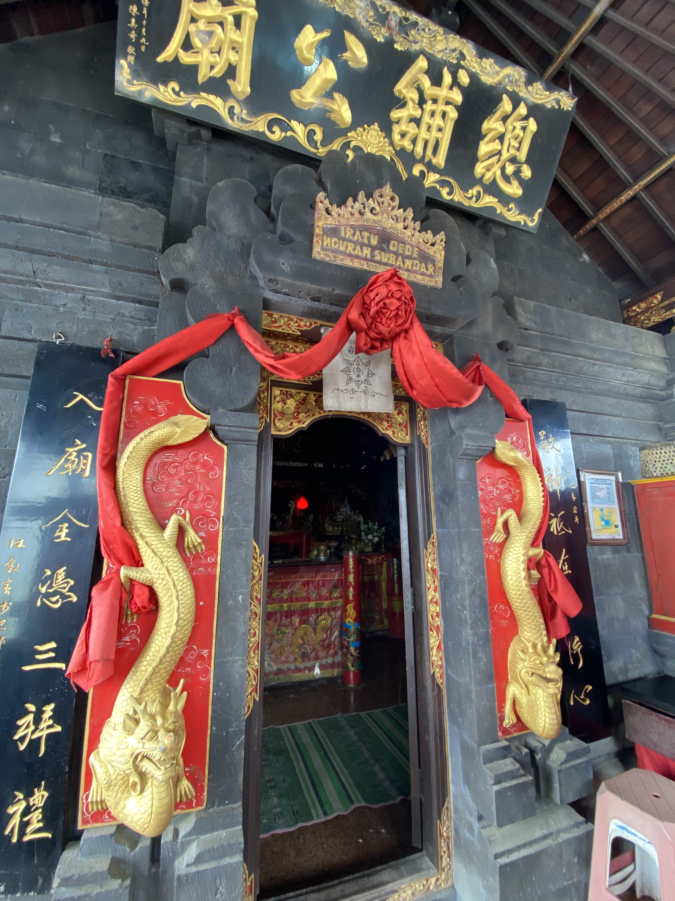
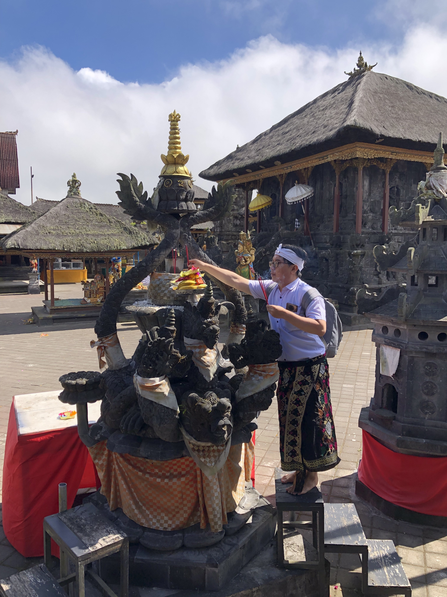

独特庙！巴厘庙有华人神社？

旅行者在庙里
巴厘岛 - 除了Besakih ‘母庙’, Ulun Danu Batur 庙对巴厘岛本体人是最神圣的。虽然这座庙从伟大的Batur火山不远，但在这个巴厘岛文化中心，为什么有一个华人圣地呢？来关注我们一起检查吧！
Ulun Danu Batur庙是有很长的历史。在一九二六年这座庙被Batur火山破坏。虽然经过那么重大的灾难，虔诚的村民把庙的剩下搬到今天的地点。今天的Ulun Danu Batur庙还勇敢地站着。从外面看，这座庙看的没那么特别，但走了进去，可以感受一种上帝的感觉。陪着你，有285座祭坛，其中一个非常特别，因为那座祭坛明确地祈祷一个华人。名叫江菁薇。
江菁薇
12世纪，巴厘岛一位王爱上了一位商人的美丽女儿。虽然他的顾问不同意他们的婚事，但他还是坚持了下去。巴厘岛人民热爱他们的女王，最终成为繁荣女神。
在Ulun Danu Batur庙，她的神龛代表巴厘人与华人的文化适应。醒目的红色与其他神殿的深色形成对比。门上装饰着吉祥的龙，门的两侧刻着中文铭文。然而，这座庙还建筑巴厘风格，用了他们特色黑石头。
华人在巴厘岛有几百年的历史。和本地人和睦相处。两种美丽文化的交融造就了这座美丽的历史圣地。
Pura Ulun Danu Batur.
Jl. Raya Kintamani, Batur Sel., Kec. Kintamani, Kabupaten Bangli, Bali
80652
瑞肯报 / 林瑞肯